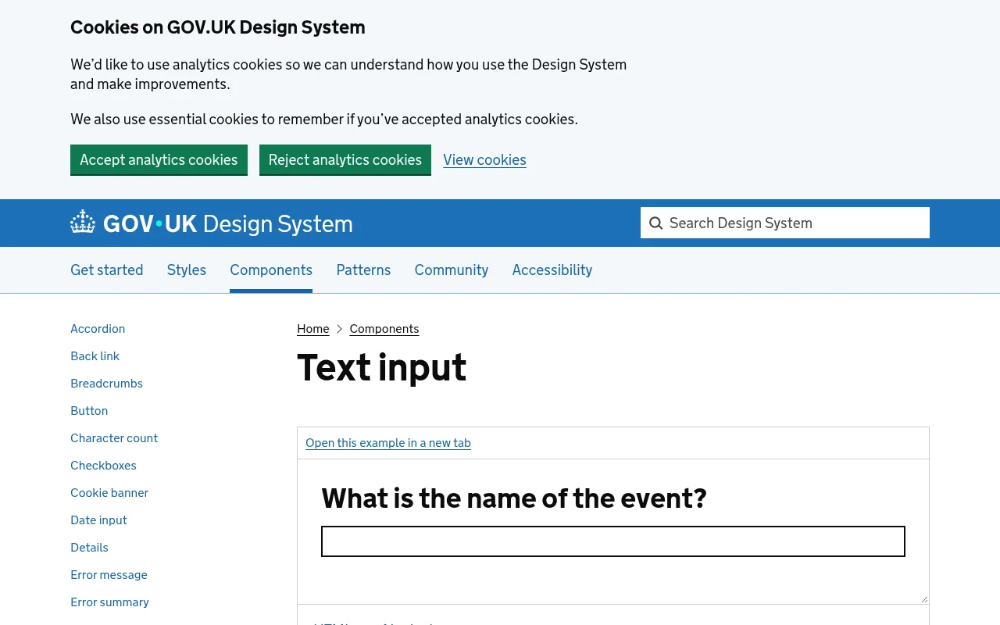
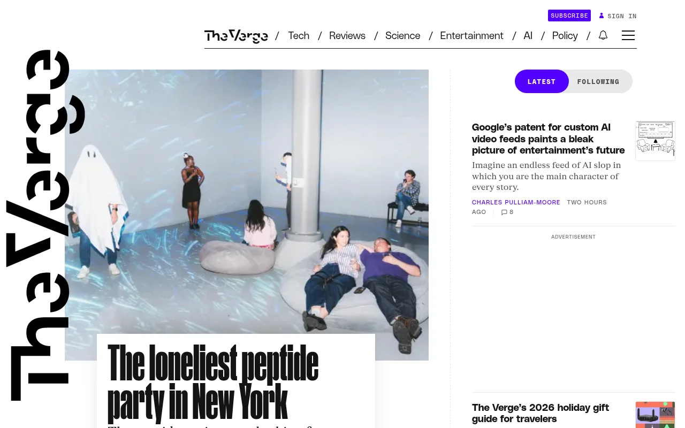
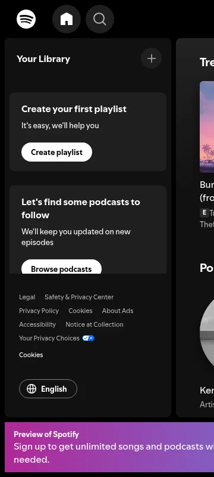
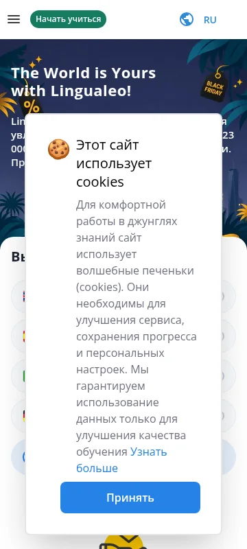
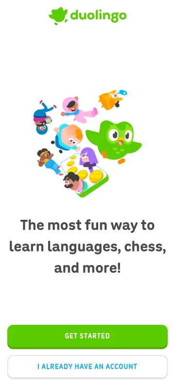
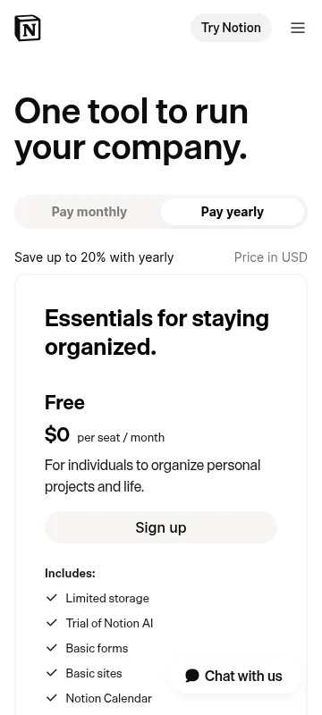

Блок А · Модуль А1
Глаз дизайнера
Почему один экран кажется дорогим и аккуратным, а другой «каким-то не таким»? Почти всегда дело в десяти простых вещах: что крупнее, что с чем рядом, ровно ли стоят края, сколько цветов и какие тени. В этом модуле мы разберём их по одной. Когда научишься их замечать, вместо «что-то не то» ты сможешь сказать точно: «заголовок не выделен» или «тени грязные».
Иерархия: что главное
Экран здесь значит не стекло телефона, а то, что на нём показано целиком в одну минуту: например, «экран урока» или «главный экран приложения». Дизайнеры говорят «экран» про одну картинку будущего приложения.
Элемент это любая отдельная вещь на экране: заголовок, кнопка, картинка, строка текста, значок.
Иерархия пришла из жизни: в армии и на работе есть главные и подчинённые. На экране то же самое, только с элементами: один главный, несколько второстепенных, остальные мелочи.
Иерархия (visual hierarchy) это порядок, в котором человек смотрит на экран. Вспомни первую полосу газеты: сначала видишь огромный заголовок, потом фото, потом подзаголовок, и только потом мелкий текст. Газета сама ведёт твой взгляд. Хороший экран делает так же: за секунду понятно, что здесь главное, что второстепенное, а что мелочи. Если всё одинаково крупное и яркое, глаз не знает, куда смотреть, и человек теряется.
Сделать что-то главным можно всего пятью способами: размер (крупное замечают первым), жирность (жирное и тёмное сильнее тонкого и серого), цвет (одно яркое пятно среди спокойных притягивает взгляд), место (верх и левый край мы читаем первыми, как в книге) и воздух (свободное место вокруг вещи, как пустая сцена вокруг солиста). Нажми кнопку под примером и посмотри, что будет, если всё это убрать.
Урок 8. Семья
40 минут · группа «Дети»
爸爸 妈妈
Учимся рассказывать, кто есть в семье.
Начать урокКак это в жизни: иерархия
Посмотри, в каком порядке глаз сам читает эти экраны. Ты его не выбираешь: его выбрал дизайнер размером, жирностью и цветом.
- Главное: название товара «iPhone», самый крупный и жирный текст.
- Второе: подзаголовок, заметно мельче и тоньше.
- Третье: действие. Синяя залитая кнопка ярче контурной соседки.
- Картинка идёт после текста: сначала понимаешь, что это, потом любуешься.
- Мелкая подпись над заголовком: самый тихий уровень, читается последним.
- Начало заголовка тёмное, это главная мысль.
- Продолжение того же абзаца приглушено цветом. Размер тот же, а важность ниже: иерархию делает не только размер, но и цвет.
- Главная кнопка залита фиолетовым, соседняя «Sign up with Google» только в рамке.
Скриншоты настоящих сайтов, ноябрь 2026. Наведи на пункт или нажми его, и номер на картинке подсветится.
Подробнее: как глаз читает экран
Исследователи записывали, куда смотрят люди на сайтах (для этого есть камеры, которые следят за зрачком). Оказалось, что на страницах с текстом взгляд бежит буквой F: сначала строка вдоль верха, потом строка чуть ниже, потом вниз по левому краю. На экранах с картинками и большими заголовками глаз прыгает буквой Z: левый верх, правый верх, по диагонали вниз, правый низ. Отсюда правила: самое важное ставят наверх и влево, а кнопку действия туда, где взгляд заканчивает путь.
Три уровня, не больше
На хорошем экране обычно три уровня важности. Первый: одна вещь, ради которой экран существует (например, название урока). Второй: 2–4 вещи поддержки (подзаголовок, картинка, кнопка). Третий: всё остальное мелко и тихо (дата, подписи, мелкие ссылки). Если хочется сделать главными сразу пять вещей, значит, экран пытается сказать слишком много, и его лучше разделить на два.
- Всё жирное. Если жирное везде, жирность перестаёт выделять.
- Главная кнопка и второстепенная одинаковые. Человек не понимает, какую нажать.
- Заголовок чуть-чуть больше текста (18 и 16). Разница должна быть заметной с первого взгляда, хотя бы в полтора раза.
Мини-тест
Как сделать кнопку «Начать урок» главной на экране?
Главное выделяется контрастом с окружением. Если ярко всё, выделиться нечему. Мигание раздражает и не решает задачу.
Сколько уровней важности обычно на одном экране?
Обычно главное, второстепенное, детали и иногда служебное. Больше уровней глаз не различает.
Группировка: что с чем связано
Группа здесь значит несколько элементов, которые глаз воспринимает как одно целое: картинка с подписью, поле ввода с названием, три кнопки рядом.
Гештальт немецкое слово, значит «целостный образ». Так назвали направление в психологии, которое изучало, как мозг собирает отдельные точки и линии в понятные фигуры. Например, ты видишь лицо в розетке: две дырки и щель, а мозг сам достраивает «лицо».
Плашка это цветной прямоугольник под текстом, как наклейка. Рамка это линия вокруг.
Когда вещи стоят рядом, глаз считает их одной компанией. Так же работает, если они похожи (одного цвета или формы) или лежат в общей коробке (рамке, плашке). Вспомни прилавок в магазине: яблоки лежат с яблоками, груши с грушами, и между кучками есть проход. Никто не вешает таблички «это группа», и так понятно. Психологи описали это лет сто назад и назвали законы гештальта (gestalt principles).
Самый полезный из них закон близости (proximity). Правило простое: внутри компании расстояние маленькое, между компаниями большое. Если так сделать, рамки и линии часто вообще не нужны. Подвигай ползунки и посмотри, как три задания то разделяются, то сливаются в одну кучу.
Слова
12 карточек
Сдать до пятницы
Тоны
3 упражнения
Сдать до субботы
Иероглифы
5 минут
Без срока
Как это в жизни: группировка
 1234
1234- Картинка слева, текст и кнопки справа: две группы, между ними воздух.
- Заголовок и кнопки стоят близко: глаз считает их одним блоком «о чём и что нажать».
- Две кнопки одной ширины друг под другом, расстояние между ними маленькое: это пара.
- Полоска языков внизу отделена линией и большим отступом: это отдельная группа, к первому экрану не относится.
- Заголовок и подзаголовок вплотную: одна мысль.
- Кнопки рядом друг с другом: группа действий.
- Окно продукта ниже с большим отступом: следующая группа, «вот как это выглядит».
Скриншоты настоящих сайтов, ноябрь 2026. Наведи на пункт или нажми его, и номер на картинке подсветится.
Подробнее: пять способов сказать «это вместе»
- Близость. Стоят рядом, значит вместе. Самый сильный и самый «бесплатный» способ: ничего рисовать не надо, только расстояния.
- Сходство. Одинаковые по цвету, форме или размеру воспринимаются как одна команда. Все красные значки «ошибки», все синие ссылки.
- Общая область. Лежат на одной плашке или в одной рамке, значит вместе. Так делают карточки.
- Связь. Соединены линией, значит связаны. Так рисуют шаги «1 → 2 → 3».
- Выравнивание. Стоят на одной линии, значит из одного списка.
Порядок важен: начинай с близости. Если хватает расстояний, рамки не нужны. Чем меньше рамок и линий, тем спокойнее экран.
- Подпись к картинке стоит на одинаковом расстоянии и от своей картинки, и от следующей. Непонятно, к какой она относится.
- Название поля в анкете ближе к предыдущему полю, чем к своему.
- Каждую мелочь обвели рамкой. Экран превращается в таблицу.
Мини-тест
Подпись под картинкой стоит одинаково далеко от неё и от следующего абзаца. Что не так?
По закону близости подпись должна стоять ближе к своей картинке, чем к соседям, иначе связь теряется.
Выравнивание и сетка
Выравнивание это когда края разных элементов стоят на одной воображаемой линии. Как книги на полке, поставленные корешками ровно по краю.
Колонка это вертикальная полоса, на которые делят экран, как газетную страницу на столбцы.
Поля в дизайне (по-английски margins) это не ржаные поля, а пустая полоска по краям листа или экрана, как поля в школьной тетради, на которых учитель пишет замечания. На них ничего не кладут, они нужны, чтобы содержимое не прилипало к краю.
Пиксель это самая маленькая точка экрана. 1 пиксель очень мало, примерно толщина волоса на экране телефона.
Сетка (grid) это невидимые колонки, по которым всё расставлено. Как линейки в тетради по чистописанию: самих линеек в готовом письме не замечаешь, но буквы благодаря им стоят ровно. На телефоне обычно 4 колонки, на компьютере 12. Между колонками одинаковые щели, они называются gutter (промежуток). По краям экрана поля, margins, чтобы ничего не прилипало к краю.
Человек не видит сетку, но чувствует её. Если левые края заголовка, текста и картинок стоят ровно на одной линии, экран кажется аккуратным. Если что-то сдвинуто на пару миллиметров, он кажется неряшливым, хотя никто не скажет, почему. Как криво повешенная картина: сразу режет глаз. Нажми «Сломать выравнивание» и проверь на себе.
Курс HSK 1
Двенадцать уроков для старта: тоны, первые иероглифы, простые диалоги.
Как это в жизни: сетка и выравнивание

123
456- Узкая левая колонка с меню: все пункты выровнены по одной левой линии.
- Широкая колонка содержимого: «хлебные крошки», заголовок и пример начинаются с одной и той же вертикали.
- Поле ввода тоже стоит ровно по этой линии. Ничего не «гуляет» на пару пикселей.
- Большая колонка с главной новостью и фото.
- Узкая правая колонка со списком новостей. Две колонки разной ширины, но обе привязаны к общей сетке.
- Маленькие картинки в списке одного размера и прижаты к правому краю колонки.
Скриншоты настоящих сайтов, ноябрь 2026. Наведи на пункт или нажми его, и номер на картинке подсветится.
Подробнее: как выглядит сетка в Figma
В Figma сетку можно включить у любого фрейма: справа в панели найди раздел Layout guide (раньше он назывался Layout grid), нажми + и выбери Columns (колонки). На листе появятся розовые полосы. Они не печатаются и не видны людям, это только направляющие для тебя, как карандашная разметка под краской.
Для телефона ставят 4 колонки, поля по краям 16–20 пикселей, промежутки между колонками 16. Для компьютера 12 колонок, поля 24–80, промежутки 24. Почему 12? Число 12 делится на 2, 3, 4 и 6, поэтому на 12 колонках легко поставить 2 карточки в ряд, 3 или 4.
Три вида выравнивания текста
По левому краю: все строки начинаются с одной линии. Для любого текста длиннее строки. По центру: каждая строка посередине, начала строк «гуляют». Только для коротких заголовков и надписей. По ширине (растянуть на всю строку): в книгах красиво, а на экранах между словами появляются дыры, лучше не использовать.
- Текст по центру в абзаце из нескольких строк. Глаз каждый раз ищет, где начало.
- Картинка начинается на 3 пикселя левее заголовка. Этого не видно специально, но экран «самодельный».
- Нет полей: текст на телефоне прилип к краю экрана.
Мини-тест
Сколько колонок обычно в сетке экрана телефона?
На телефоне 4 колонки (иногда 2), на планшете 8, на компьютере 12. Так один макет удобно перестраивать под разные экраны.
Отступы и ритм
Отступ это пустое расстояние. Бывает двух видов: внутренний отступ (по-английски padding) это расстояние от края коробки до того, что лежит внутри, как поролон в посылке вокруг вещи; промежуток (gap) это расстояние между соседними вещами, как проход между грядками.
Ритм в дизайне похож на ритм в музыке: повторение одинаковых расстояний. Когда они повторяются, глаз успокаивается, как от ровного шага.
Профессионалы не ставят расстояния на глаз. У них есть короткий список разрешённых чисел, он называется шкала отступов (spacing scale): 4, 8, 12, 16, 24, 32, 48, 64. Это как размеры одежды S, M, L, XL: не бывает размера «чуть больше M, но меньше L». Дизайнер не мучается «15 или 17?», а берёт ближайшее из списка. Благодаря этому все экраны выглядят как одна семья, а глаз чувствует спокойный ритм.
Второе правило: внутри меньше, чем снаружи. Поля внутри карточки меньше, чем расстояние между карточками, а оно меньше, чем между большими разделами. Как в шкафу: вещи на одной полке лежат плотно, а между полками доска побольше. Это тот же закон близости из прошлой главы.
Урок 8. Семья
40 минут
Учимся рассказывать, кто есть в семье.
Начать урокКак это в жизни: воздух и отступы
- Огромное пустое место над заголовком. Это не «недоделали»: пустота делает экран спокойным и дорогим.
- Заголовок и текст прижаты к одной левой линии с ровным отступом от края.
- Скриншот продукта начинается после большого отступа: новая часть рассказа.
- Меню в тонкой полоске сверху, между пунктами одинаковые промежутки.
- Строки близко друг к другу внутри группы, а между группами (текст, кнопки, картинка) расстояние больше. Это ритм.
Скриншоты настоящих сайтов, ноябрь 2026. Наведи на пункт или нажми его, и номер на картинке подсветится.
Подробнее: почему числа 4 и 8
Экраны телефонов бывают разной плотности: на одном и том же сантиметре может быть 2 или 3 настоящие точки. Числа, кратные 4 и 8, при любом увеличении делятся ровно и не дают «полупикселей», от которых края становятся размытыми. Вторая причина человеческая: из короткого списка выбирать быстрее, а результат одинаковый у всех дизайнеров команды.
Удобная шкала: 4 (между значком и словом), 8 (между строками внутри маленькой группы), 12–16 (поля внутри карточки), 24 (между карточками), 32–48 (между разделами экрана), 64+ (большой воздух вокруг главного на сайте).
- Расстояния «на глаз»: 13, 17, 22. Вроде похоже, а ритма нет.
- Внутри карточки места больше, чем между карточками. Карточки сливаются в одну кашу.
- Поля карточки слева 16, справа 24. Сразу выглядит криво.
Мини-тест
Какие числа подходят для шкалы отступов?
Кратные 8 (или 4) хорошо делятся, совпадают с сеткой и с размерами экранов. Случайные числа ломают ритм.
Что должно быть больше?
Внутри меньше, чем снаружи. Иначе содержимое соседних карточек «перетекает» друг к другу.
Шрифт и его характер
Шрифт это рисунок букв. Одни и те же буквы можно нарисовать по-разному: строго, округло, «как рукой». Каждый такой рисунок со всеми буквами алфавита, цифрами и знаками и есть шрифт.
Засечки это маленькие поперечные чёрточки на концах букв, будто ручка, заканчивая линию, чуть дёрнулась в сторону. По-английски serif. Посмотри на рисунок ниже: слева у «Т» и «п» засечки есть, справа нет.
Антиква старое название шрифтов с засечками, от латинского «древний»: такими буквами печатали книги ещё 500 лет назад. Гротеск шрифты без засечек, название из XIX века, когда они казались странными, «гротескными».
Шрифт похож на почерк или голос. Одни и те же слова, сказанные шёпотом, басом или пропетые, звучат по-разному. Гарнитура (typeface) это семья шрифта с одним «голосом», например Inter или Georgia. Внутри семьи есть начертания (weights, styles): тонкое, обычное, жирное, курсив. Как один человек, который говорит тихо, обычно или громко.
Главные семьи шрифтов: антиква (serif), у букв есть маленькие «ножки» на концах, как в книгах; звучит классически и дорого. Гротеск (sans-serif), без ножек, гладкий; звучит современно и спокойно, им набирают почти все приложения. Моноширинный, где каждая буква одной ширины, как на печатной машинке; звучит технично. Рукописные и декоративные годятся только для пары слов, как подпись на открытке, но не для текста. Нажимай кнопки и слушай, как меняется «голос».
Урок восьмой: семьяbàba, māma · 爸爸 妈妈 · Аа Бб Ёё 0123
Как сочетать
- На одном экране один шрифт на всё или два: один для заголовков, второй для текста. Больше похоже на записку, вырезанную из разных журналов.
- Если берёшь два шрифта, они должны заметно отличаться, например антиква и гротеск. Два почти одинаковых гротеска выглядят не как пара, а как ошибка.
- Для AIKITAY важно: в шрифте должны быть буквы пиньиня с тонами (ā á ǎ à). Во многих популярных шрифтах нет букв ǎ ǐ ǒ ǔ. Тогда компьютер берёт эту букву из другого шрифта, и слово выглядит «лоскутным».
Как это в жизни: характер шрифта
Один и тот же текст разными шрифтами звучит по-разному, как одна фраза, сказанная шёпотом или в мегафон.
 5
5 6
6- Огромный вертикальный логотип: шрифт как картинка, почерк журнала.
- Узкий жирный заголовок: громкий, газетный, кричит «новость».
- Текст новостей с засечками: спокойный, «книжный», удобный для чтения.
- Мелкие подписи капсом (имя автора, время): третий шрифт, служебный.
- Мягкий округлый шрифт в заголовке: дружелюбный, как сам сервис для спокойствия.
- Строгий гротеск (шрифт без засечек) без украшений: точный, технический, «для профессионалов».
Скриншоты настоящих сайтов, ноябрь 2026. Наведи на пункт или нажми его, и номер на картинке подсветится.
Подробнее: зачем вообще засечки
Засечки появились от кисти и резца: так заканчивалась линия у римских надписей на камне и в рукописных книгах. В длинном книжном тексте на бумаге засечки помогают глазу держать строку. На экране разницы почти нет, поэтому сегодня выбор между засечками и без них это вопрос характера, а не удобства.
- С засечками: книги, журналы, юристы, рестораны, всё «классическое, умное, дорогое». Пример: Georgia, Times, Playfair.
- Без засечек: приложения, сайты сервисов, кнопки и мелкие подписи, всё «современное, простое, техничное». Пример: Inter, Arial, SF Pro (шрифт iPhone), Roboto (шрифт Android).
Частая хорошая пара: заголовки с засечками, обычный текст без засечек. Так делают журналы и многие «премиальные» сайты.
Где найти шрифты
Бесплатные шрифты с кириллицей есть на Google Fonts (fonts.google.com, слева фильтр Language → Cyrillic) и на Paratype. В Figma все шрифты Google уже встроены: выделяешь текст и справа в разделе Text выбираешь название.
- Три-четыре разных шрифта на одном экране.
- Декоративный рукописный шрифт для длинного текста: читать мучительно.
- Шрифт без нужных букв: нет «ё», нет пиньиня с тонами, и буквы подставляются из другого шрифта.
Мини-тест
Какой шрифт выбрать для длинного текста задания?
Для чтения нужен спокойный наборный шрифт. Рукописные и капс годятся только для коротких акцентов.
Почему важно проверять пиньинь в выбранном шрифте?
Если буквы ǎ нет, браузер подставит её из другого шрифта, и слово будет «рябым». Мы уже проверяли: в Manrope и Golos её нет, в Onest и IBM Plex есть.
Размер, строки и шкала
Кегль старое типографское слово для размера шрифта. В дизайне экранов размер шрифта меряют в пикселях: 16 пикселей это обычный текст в приложении, 32 крупный заголовок.
Интерлиньяж от латинского «между линиями»: расстояние от одной строки до следующей. Записывают либо в пикселях (24), либо множителем (1,5 значит «в полтора раза больше размера букв»).
Шкала здесь значит «лесенка размеров»: короткий заранее выбранный список, из которого берут все размеры.
Удобно ли читать текст, решают три числа. Кегль это размер букв. Интерлиньяж (line-height) это расстояние между строками, как ширина линейки в тетради. Длина строки (measure) это сколько букв помещается в одну строку.
- Обычный текст на экране компьютера 16–18 пикселей, на телефоне не меньше 15–16. Мельче глаза устают.
- Расстояние между строками примерно в полтора раза больше размера букв (1,4–1,6). У больших заголовков меньше, 1,05–1,2, иначе строки заголовка разваливаются.
- В одной строке 45–75 букв. Если строка длиннее, глаз, дойдя до конца, не может найти начало следующей, как при чтении очень широкой газеты. Если короче, текст рвётся на обрывки.
Когда строка очень длинная, глазу трудно найти начало следующей, и он теряется. Когда строки слиплись, текст превращается в серое пятно. Подвигай ползунки и найди положение, где читать легче всего.
Шкала размеров
Размеры букв, как и отступы, берут из короткого списка, где каждый следующий размер заметно больше предыдущего (примерно в 1,2–1,33 раза). Как ступеньки лестницы одинаковой высоты. Тогда заголовок сразу виден, а размеров «почти одинаковых», вроде 15 и 16, не бывает.
Как это в жизни: размеры и шкала
- Заголовок примерно в 4 раза крупнее подзаголовка. Большая разница сразу показывает главное.
- Подзаголовок обычного размера, ровно столько, сколько удобно читать.
- Текст на кнопках ещё мельче, но жирнее, чтобы оставаться заметным.
- Подпись к полю крупная и жирная: государственный сайт рассчитан на всех, включая людей с плохим зрением.
Скриншоты настоящих сайтов, ноябрь 2026. Наведи на пункт или нажми его, и номер на картинке подсветится.
Подробнее: где это меняется в Figma
Выдели текст. Справа в разделе Typography (типографика) три главных поля: размер (число, например 16), Line height (интерлиньяж, можно писать 150% или 24) и Letter spacing (расстояние между буквами). Длину строки задаёшь шириной самого текстового блока: потяни его край мышкой.
Готовые числа для старта
| Что | Телефон | Компьютер | Интерлиньяж |
|---|---|---|---|
| Главный заголовок | 28–32 | 40–56 | 1,1–1,2 |
| Заголовок раздела | 20–24 | 28–32 | 1,2–1,3 |
| Обычный текст | 16–17 | 16–18 | 1,4–1,6 |
| Подпись, мелкий текст | 13–14 | 13–14 | 1,3–1,4 |
- Текст на всю ширину компьютерного экрана: строка в 150 букв.
- Мелкий текст 11–12 пикселей «чтобы было аккуратно». Людям старше 40 уже трудно.
- У заголовка в две строки интерлиньяж как у текста: строки заголовка разъезжаются.
Мини-тест
Сколько знаков в строке удобно для чтения?
Это давнее правило книжной типографики, и оно работает на экране так же.
На экране размеры шрифта 14, 15, 16, 17 и 18. Что не так?
Глаз не видит разницы между 15 и 16. Лучше 3–4 заметно разных размера из шкалы.
Мелочи набора и коды цветов
Набор это то, как текст «собран» из букв: расстояния, знаки препинания, переносы. Слово из времён типографий, где буквы собирали руками из металлических кубиков.
Капс (от английского caps lock) значит ВСЕ БУКВЫ ЗАГЛАВНЫЕ.
Неразрывный пробел это особый пробел, через который строка не переносится, он «склеивает» два слова. Нужен, чтобы предлог не остался один в конце строки.
Есть мелочи, которые обычный человек не назовёт, но почувствует: «как-то аккуратно» или «как-то самодельно». Как разница между домашним пирогом и пирогом из кондитерской: рецепт тот же, а мелочи другие.
Расстояния между буквами
- Трекинг, разрядка (letter spacing, tracking): насколько раздвинуты все буквы в слове. Мелкие подписи ЗАГЛАВНЫМИ раздвигают чуть шире, чтобы читались. Большие заголовки, наоборот, чуть сдвигают, чтобы не разваливались. Подвигай ползунок.
- Кернинг (kerning): подгонка расстояния между двумя конкретными буквами. В паре «АУ» или «ГА» буквы кажутся далёкими друг от друга, и их сдвигают. Хорошие шрифты делают это сами.
Правила русского набора
- Висячие предлоги: короткие слова «в», «и», «с», «на» не оставляют в конце строки, их переносят вместе со следующим словом. Иначе строка обрывается на полуслове, как фраза, оборванная на вдохе. В коде для этого ставят неразрывный пробел.
- Кавычки и тире: в русском тексте кавычки «ёлочки», а не "лапки". Длинное тире (—) и дефис (-) это разные знаки: дефис внутри слова («кое-что»), тире между словами. Для чисел «10–12» берут среднее тире (–).
Шрифты на сайте
- Веб-шрифт (web font): файл шрифта, который сайт присылает вместе со страницей, чтобы у всех был одинаковый шрифт, даже если у человека он не установлен. Для AIKITAY эти файлы лежат на своём сервере в России.
- Вариативный шрифт (variable font): один файл, в котором толщину можно менять плавно, как регулятор громкости, а не только «обычный» или «жирный». Легче и гибче, позволяет делать плавные анимации толщины.
Как записывают цвет
Компьютер хранит цвет числами. Ты встретишь две записи. HEX выглядит так: #6B5F8A. Это шесть знаков, по два на красный, зелёный и синий. RGB пишет то же самое обычными числами от 0 до 255: rgb(107, 95, 138). Как адрес, записанный по-русски или латиницей: место одно. В Figma код цвета виден справа в разделе Fill, его можно скопировать и вставить.
Подробнее: как набрать правильные знаки
- «Ёлочки»: на Windows в Word они ставятся сами, если нажать Shift+2 в русской раскладке. На Mac: Option+\ и Option+Shift+\. Проще всего попросить меня или поставить раскладку Бирмана (бесплатная, в ней все знаки на клавишах с Alt).
- Тире «—» в Word получается, если между словами набрать дефис с пробелами: программа сама заменит. На Mac Option+Shift+-.
- Код цвета в Figma: выдели фигуру, справа в разделе Fill (заливка) нажми на шесть знаков рядом с квадратиком цвета, выдели их и скопируй Ctrl+C.
Как читать HEX: #6B5F8A это три пары: 6B красного, 5F зелёного, 8A синего. Каждая пара от 00 (нет совсем) до FF (максимум). #000000 чёрный, #FFFFFF белый, #FF0000 чисто красный. Здесь синего больше всего, поэтому цвет сиреневато-синий.
Мини-тест
Строка заканчивается на «в», а слово «школе» перенеслось вниз. Что не так?
Короткие предлоги не оставляют в конце строки.
Мелкая подпись «НОВЫЙ УРОК» капсом слипается. Что сделать?
Заглавные буквы мелким кеглем раздвигают, так их легче читать.
Цвет и его роли
Палитра это набор цветов, выбранных для проекта, как коробка красок, которую взяли на урок: только эти и никаких других.
Акцент (акцентный цвет) это самый заметный цвет, которым показывают главное действие: «нажми сюда». Слово из музыки и речи: акцент это ударение.
Нейтральные цвета это белый, серые, бежевые, почти чёрный: они ничего не «говорят», на них держится всё остальное.
Роль цвета это его работа: фон, текст, кнопка, ошибка.
Новичок спрашивает «какой цвет красивый». Дизайнер спрашивает «какую работу делает этот цвет». Как в доме: стены спокойные, мебель чуть заметнее, а красная кнопка у пожарной сигнализации одна, и все знают, что она значит. В интерфейсе у цвета пять работ:
самый тихий
карточки, панели
и его серые
«нажми сюда»
успех, ошибка, внимание
Пропорция 60 – 30 – 10
Примерно 60% экрана занимает спокойный основной цвет (как стены), 30% второй цвет (как мебель), 10% яркий акцент (как подушки и цветы). Акцента мало, и именно поэтому он заметен. Если ярким сделать всё, ничего не будет заметно.
Начать урокРасписание
Сразу ясно, куда нажать.
НачатьРасписаниеОценкиЧат
Всё кричит, ничего не главное.
Как это в жизни: цвет и его роли
123 45
45
67- Жёлтая полоса сверху: самое яркое место, ловит взгляд на акцию.
- Синяя кнопка: синий здесь работает только для действий. На тёплом оранжевом фоне он сразу заметен, потому что противоположен ему.
- Оранжевый персонаж того же цвета, что и фон: тёплая гамма, «дружелюбно и спокойно».
- Градиент как фирменная деталь: живой цветной всплеск в одном углу, а не по всему экрану.
- Фиолетовый повторяется и в кнопке, и в градиенте, и в тексте: один акцент, связанный по всей странице.
- Тёмная тема: почти чёрный фон, на нём белый текст и белые кнопки-таблетки.
- Цветная плашка внизу: единственное цветное пятно на тёмном экране, поэтому её невозможно не заметить.
Скриншоты настоящих сайтов, ноябрь 2026. Наведи на пункт или нажми его, и номер на картинке подсветится.
Подробнее: сигнальные цвета
Есть цвета, значение которых люди уже выучили по жизни, как светофор. Зелёный: готово, успех, «верно». Красный: ошибка, опасность, удалить. Жёлтый или оранжевый: внимание, предупреждение. Синий: ссылка, информация. Спорить с этим значением дорого: если сделать кнопку «Удалить» зелёной, люди будут ошибаться.
Тёплое и холодное
Цвета делят на тёплые (красный, оранжевый, жёлтый, бежевый, как огонь и солнце) и холодные (синий, голубой, фиолетовый, как вода и лёд). Тёплые кажутся ближе, уютнее и активнее, холодные дальше, спокойнее и строже. Серый тоже бывает тёплым (с каплей жёлтого) и холодным (с каплей синего).
- Пять одинаково ярких цветов. Глаз не знает, что главное.
- Акцентный цвет использован и для кнопок, и для заголовков, и для украшений. Он перестаёт значить «нажми».
- Чисто чёрный текст #000000 на чисто белом: слишком резко, лучше очень тёмно-серый.
Мини-тест
Кнопка «Сдать ДЗ» фиолетовая, ссылка «Правила» тоже фиолетовая, и заголовки фиолетовые. Что не так?
Когда акцентом окрашено и действие, и украшение, глаз перестаёт понимать, что кликабельно. Акцент держат для действий.
Контраст и читаемость
Контраст это разница. В дизайне чаще всего речь о разнице по светлоте между текстом и фоном: тёмное на светлом читается, серое на сером нет.
Читаемость это насколько легко прочитать текст без усилия. Не «можно ли вообще прочитать», а «не устают ли глаза».
WCAG (читается «ви-кэг») это международные правила доступности сайтов: как сделать, чтобы ими могли пользоваться все, включая людей с плохим зрением.
Контраст (contrast ratio) это насколько текст отличается от фона по светлоте. Чёрное на белом это самый сильный контраст, светло-серое на белом слабый. Контраст измеряют числом: 1 : 1 значит одинаково (текст не видно), 21 : 1 это чёрное на белом. Есть международное правило удобства для всех людей (оно называется WCAG): обычный текст должен быть не слабее 4,5 : 1, крупный текст и значки не слабее 3 : 1. Подвигай ползунок и посмотри, где текст перестаёт читаться.
- Твои уроки идут через показ экрана в Zoom. Zoom сжимает картинку, и контраст становится слабее. Поэтому для слайдов бери контраст с запасом.
- Не сообщай важное только цветом. Тоны пиньиня у тебя раскрашены, но значок тона над буквой всё равно нужен: часть людей плохо различает цвета, а на чужом экране цвета искажаются.
Как это в жизни: контраст
 34
34
5- Белый текст на тёмно-зелёной кнопке: очень высокий контраст, читается при любом зрении и на любом экране.
- Толстая чёрная рамка поля: видно, куда печатать, даже на старом мониторе.
- Тёмно-синий заголовок на светлой части фото: дизайнер поставил текст туда, где фото светлое и спокойное.
- Фото на весь экран. Поверх пёстрой части фото текст бы потерялся, поэтому текст ниже, на «отражении в воде».
- Серый текст на белом мелкий и длинный: читать трудно, особенно на телефоне.
Скриншоты настоящих сайтов, ноябрь 2026. Наведи на пункт или нажми его, и номер на картинке подсветится.
Подробнее: как проверить контраст
На глаз контраст не измерить: на хорошем мониторе всё кажется читаемым. Есть простые способы:
- В Figma: выдели текст, нажми на цвет в разделе Fill. В окне выбора цвета есть показатель контраста (или поставь бесплатный плагин Contrast, плагины находятся через Shift+I). Ищи число 4,5 и больше.
- Чёрно-белый тест: сделай скриншот и в телефоне поставь чёрно-белый фильтр. Если текст почти слился с фоном, контраст слабый.
- Тест на солнце: открой свой экран на телефоне на улице. Что не читается на солнце, то слабо.
- Светло-серый текст «для элегантности».
- Белый текст на светлой фотографии без затемнения.
- Ошибка показана только красной рамкой, без текста «Введите почту».
Мини-тест
Светло-серый текст на белом с контрастом 2,3 : 1 «выглядит воздушно». Можно ли так оставить для текста задания?
Красота не заменяет читаемость. Бледный текст это одна из самых частых ошибок «стильных» макетов.
Форма и скругления
Скругление (по-английски corner radius, «радиус угла») это насколько закруглены углы прямоугольника. Число 0 значит острый угол, 8 немного закруглённый, а если число равно половине высоты, получается «таблетка» с полукруглыми краями.
Форма здесь значит очертания элементов: квадратные, круглые, вытянутые, с острыми или мягкими углами.
Скругление углов (corner radius) меняет характер вещи. Сравни стол с острыми углами и детский стол с круглыми. Острые углы (0–4) звучат строго и делово, мягкие (8–16) дружелюбно и современно, совсем круглые края, как у таблетки, игриво.
Мастерская деталь: скругление внутри скругления. Если в скруглённой карточке лежит скруглённая картинка, у картинки угол должен быть меньше. Насколько меньше? На ширину поля между ними: угол картинки = угол карточки − поле. Тогда края идут параллельно, как дорожки на стадионе, и вещь выглядит цельной, будто отлита за один раз. Подвигай ползунки и сравни.
Как это в жизни: форма и скругления

1
234- Сильно скруглённые «пухлые» кнопки с толстым нижним краем: игрушечные, их хочется нажать. Это часть игрового характера Duolingo.
- Кнопка-таблетка: скругление на всю высоту.
- Карточка скруглена мягче. Чем крупнее элемент, тем скругление обычно меньше по отношению к размеру.
- Круги и облака: в Headspace почти нет острых углов. Мягкие формы = «спокойно и безопасно».
Скриншоты настоящих сайтов, ноябрь 2026. Наведи на пункт или нажми его, и номер на картинке подсветится.
Подробнее: где это в Figma
Выдели прямоугольник. Справа в разделе Appearance (внешний вид) есть поле с маленьким значком уголка: это и есть скругление. Впиши число. Можно скруглить углы по-разному: нажми значок рядом с полем, и появятся четыре отдельных угла.
Форма тоже говорит характером: круги и мягкие углы кажутся дружелюбными и безопасными (детские приложения, медитации), острые углы и прямые линии серьёзными и точными (банки, профессиональные программы). Для одной системы выбирают 2–3 значения скругления, например 8 для кнопок и полей, 16 для карточек, 999 для «таблеток», и больше не придумывают.
- У каждой карточки своё скругление.
- Картинка внутри скруглённой карточки со своим таким же большим скруглением: угол «выпирает».
- Очень большое скругление у крупных блоков: всё становится похожим на детские кубики.
Мини-тест
Карточка со скруглением 24 и отступом 16. Какой радиус у картинки внутри?
24 − 16 = 8. Тогда края картинки идут параллельно краям карточки.
Материал, свет и тени
Тень на экране нарисованная: это затемнение под элементом, которое создаёт ощущение, будто он приподнят над фоном.
Слой в смысле «что над чем»: экран похож на стол, на котором лежат листы. Тень показывает, какой лист выше.
Материал это из чего «сделан» интерфейс на вид: бумага, стекло, пластик, металл, фарфор. Конечно, это иллюзия, но глаз её считывает.
Блик это светлое пятно на гладкой поверхности, отражение лампы.
Тень говорит глазу: «эта вещь лежит над фоном, её можно взять». Посмотри на чашку на столе у окна. Под ней тень тёмная и чёткая у самого дна, а дальше мягкая и расплывчатая. И она не чёрная, а с оттенком стола. Хорошая тень на экране устроена так же: свет сверху, тень мягкая, чуть цветная и состоит из двух слоёв: близкого чёткого и дальнего размытого.
Материалы
Интерфейс может выглядеть сделанным из разных материалов: бумаги, стекла, пластика, металла. От материала зависит характер. Все примеры есть в каталоге стилей.
Как это в жизни: материал, свет, тени
 12
12- Настоящий 3D: глянцевый пластик, мягкие блики и тени. Свет сверху-слева, все детали освещены одинаково, поэтому сцена выглядит цельной.
- Логотип и интерфейс плоские и простые, чтобы не спорить с объёмной сценой.
- Объёмные иконки у вкладок: маленькие 3D-предметы с собственным светом и тенью.
- Тень под всплывающей подсказкой: показывает, что она лежит выше страницы.
Скриншоты настоящих сайтов, ноябрь 2026. Наведи на пункт или нажми его, и номер на картинке подсветится.
Подробнее: тень в Figma
Выдели карточку. Справа в разделе Effects (эффекты) нажми + и выбери Drop shadow (падающая тень). Появятся числа: X и Y (куда сдвинута тень: Y = 4 значит вниз на 4), Blur (размытие, чем больше, тем мягче), Spread (насколько тень шире предмета) и цвет с прозрачностью. Хорошая мягкая тень для начала: Y 8, Blur 24, цвет тёмно-синий или тёмно-фиолетовый с прозрачностью 8–12%. Можно добавить вторую: Y 1, Blur 2, прозрачность 10%, это «близкая» чёткая тень у самого края.
- Чёрная тень с прозрачностью 25–50%: выглядит грязно.
- Тени у всего подряд: у текста, у иконок, у кнопок и карточек сразу.
- Тени падают в разные стороны.
Мини-тест
Какая тень выглядит дороже?
Настоящие тени многослойные и цветные. Одна серая тень по кругу это значение по умолчанию в редакторах, его сразу видно.
Словарик модуля
Все слова этого модуля в одном месте. Пробегись глазами: если слово понятно и можешь объяснить его своими словами, нажми «Знаю». Галочка «показать только незнакомые» спрячет выученные, так удобно повторять. Итоговый тест по всем словам курса в конце курса.